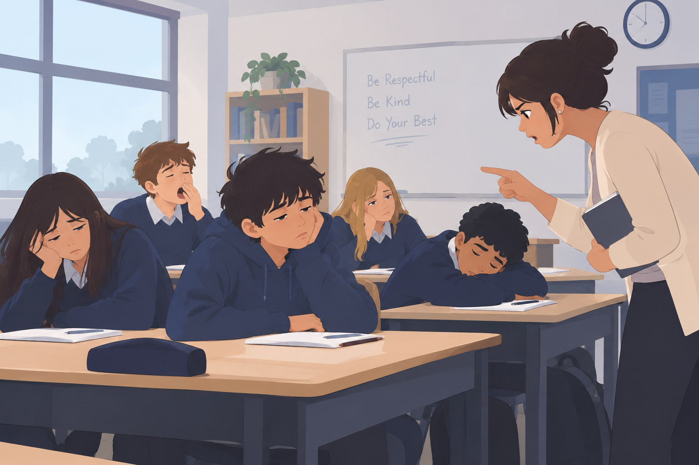

Drinking enough water throughout the day is one of the simplest and most effective ways to maintain steady physical and mental energy. Because your body is made up mostly of water, even mild dehydration can slow down circulation, reducing the flow of oxygen and essential nutrients to your muscles and brain. When your fluid levels drop, your heart has to work harder to pump blood, which often manifests as sudden fatigue, sluggishness, and difficulty focusing. Choosing water over sugary drinks prevents the rapid spikes and occational crashes in blood sugar that leave you feeling drained, ensuring a smooth, sustained boost in stamina to keep you feeling clear-headed and energized.
LEARN MORE
Drinking enough water throughout the day helps keep your body and mind energised. Not drinking enough water can make you feel tired, sluggish, and less focused. Choosing water instead of sugary drinks also helps prevent energy crashes, keeping you feeling refreshed and focused throughout the day.
Getting enough sleep helps your body and mind recover and recharge for the next day. Without enough sleep, you may feel tired, struggle to concentrate, and have less energy for daily activities. Aim for seven to nine hours of sleep each night to improve your focus, support your body’s recovery, and help you feel more energised throughout the day.
Eating balanced meals helps give your body the energy it needs throughout the day. Foods like whole grains, protein, fruits, and vegetables provide nutrients that help you stay focused and active. Eating too many sugary foods can cause quick energy boosts followed by crashes, leaving you feeling tired. Getting enough vitamins and minerals also helps your body turn food into energy and maintain steady energy levels.
Regular exercise helps improve your physical and mental energy by increasing blood flow and helping oxygen move around your body. Physical activity also releases chemicals that improve your mood and reduce stress. Even light activities like walking or stretching can strengthen your body over time, making everyday tasks easier and helping you feel more energised throughout the day.
Energy drinks or extra coffee are the best ways to fix low energy.
Hitting snooze gives you extra restorative sleep.
Eating a high-sugar snack gives you quick, lasting energy.
High sugar and excessive caffeine cause rapid blood sugar spikes followed by severe energy crashes later.
Interrupted morning sleep breaks your sleep cycle, increasing sleep inertia and making you feel groggier throughout the day.
Simple sugars cause a rapid release of insulin, leading to a quick sharp crash in energy shortly after.